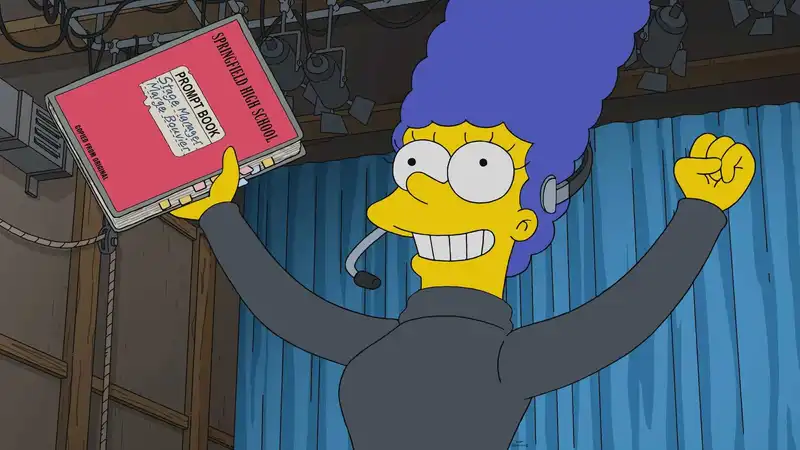
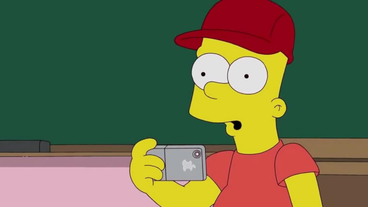
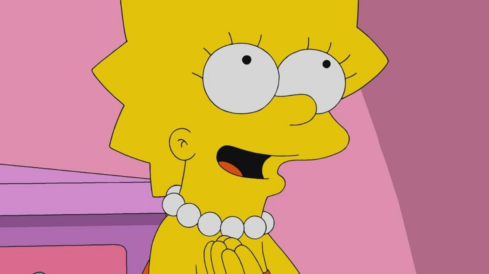
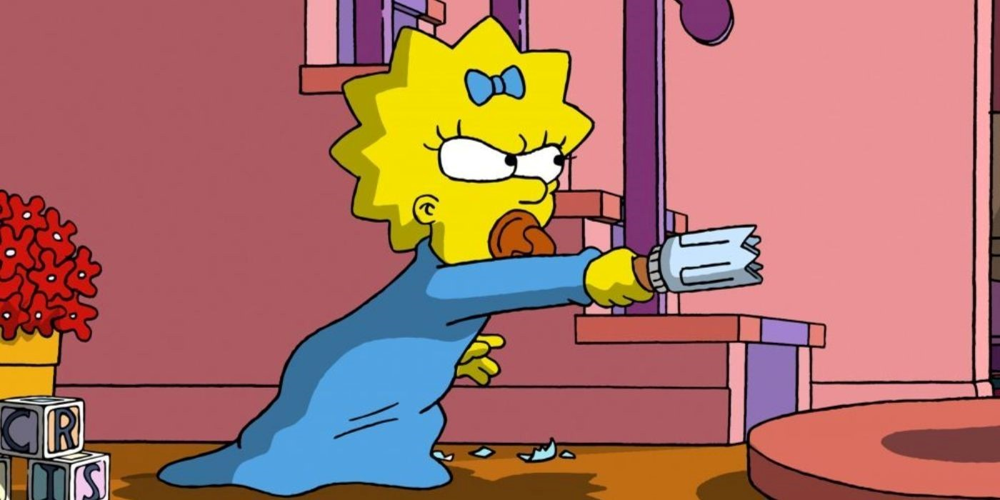
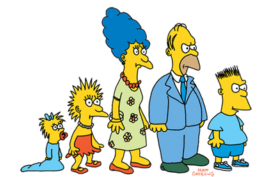
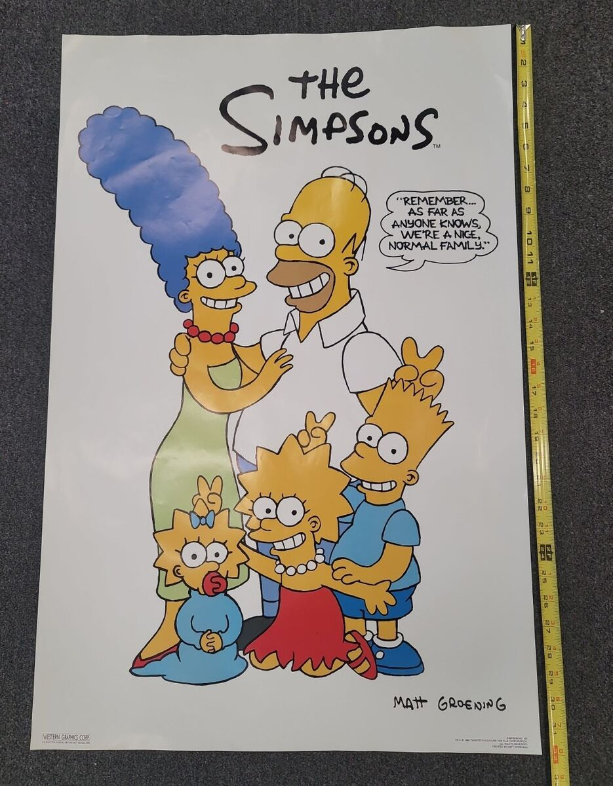
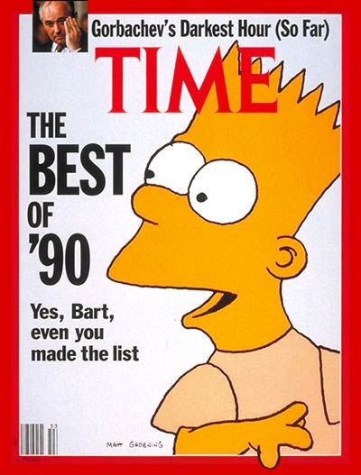
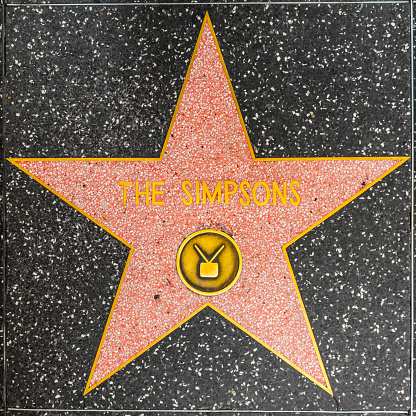

A família é composta por:
Homer Jay Simpson, o pai que adora beber cevejas duff
Marjorie (Marge) Bouvier Simpson, a esposa e mãe dedicada.
Bartholomew (Bart) Simpson, o filho de 10 anos que não leva a escola a sério.
Elisabeth (Lisa) Marie Simpson, a filha de 8 anos que é inteligente e toca saxofone.
Margareth (Maggie) Simpson, a bebê que não larga a chupeta.
A série foi inicialmente inspirada nos quadrinhos de Life in Hell criada por Matt Groening, criador de The Simpsons e Futurama, duas séries gigantes não só em suas temporadas mas também em fama e meta critcs.


A animação surgiu inicialmente em 1987 como uma série de curtas de 30 segundos produzidos por Groening para a série de televisão "The Tracey Ullman Show."
A reação dos telespectadores foi tão positiva que a animação evoluiu para um programa, estreando como um especial de Natal de meia hora em 17 de dezembro de 1989.
E depois como série regular em 14 de janeiro de 1990.
Os Simpsons são considerados até os tempos atuais uma das melhores séries de televisão de todos os tempos. Em 1999, a revista Time classificou a série como a melhor do século XX e, em 2000, recebeu uma estrela na Calçada da Fama de Hollywood.
 A série foi criada pelo cartunista Matt Groening e estreou em 17 de dezembro de 1989. Atualmente, a 35ª temporada está em exibição. A série atualmente é transmitida no Brasil pelo streaming Star + (Disney +).